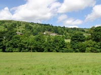
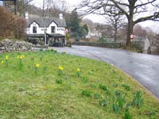
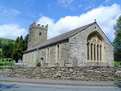
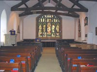
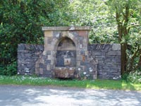

Troutbeck Tourist Information

The whitewashed cottages and farms stand close to the single narrow road which winds it's way for about a mile from the Mortal Man pub in the north, to the historic house of Townend in the south. There are no shops or cafes along the route other than the small Post Office selling post-cards, ice creams and cold drinks.

 
The limited space of the hamlet's one and only through road is better suited to walkers and cyclists. However, the very well equipped holiday cottages provide parking spaces for those arriving by car.

Lake Ullswater is only 10 miles distant with the small Brotherswater to be seen en-route via the scenic Kirkstone Pass.
The towns of Keswick, Penrith and Kendal are convenient for shopping, museums and galleries, whilst the rest of the Lake District is little more than an hour or so's drive away.
How to get there:
By rail:
From the London to Scotland West Coast Main Line, change at Oxenholme for Windermere.
From Windermere, take one of the many buses or taxis.
By road:
Reach us from J36 of the M6 motorway on the A590 / 591 to Windermere and then the A592; OR from J40 of the M6 and follow the A592.
Attractions in Troutbeck |
Jesus Church
It would be difficult to find a more tranquil setting for a church anywhere in the land. Jesus Church, standing on a 16th Century site below the pretty hamlet of Troutbeck is overlooked by fells reaching 2000 feet, wooded slopes and quietly grazing sheep in lush pastures. The extensive grounds are entered by one of three Lych gates and are well known for the colourful Spring display of daffodils and yew trees. A large stained glass window occupies much of the buildings eastern wall. It always attracts the eye and together with the stout original oak roof beams is, to many, an irresistible photo opportunity. Well worth a visit.
Townend
This 17th Century house was home to the wealthy farming Browne family for around 400 years. It is now owned by the National Trust and open to the public. The original carved furniture, paneling and oak floorboards provides an intriguing picture of the life and styles of the period. Drivers are able to drop off passengers close to the house but be aware that the road is narrow. A free car park is some 250 yards away. The house has steps, uneven floors, and access to the grounds is on loose gravel paths. Conservation demonstrations, group visits and children’s treasure trail. Hip carrying infant seats for loan. For full details, go to www.nationaltrust.org.uk/main/w-townend
Walks
There are not many locations which inspire the visitor to “take to the hills” quite as much as Troutbeck. Low, medium and difficult grades are there for the taking. Begin with the scenic gentle stroll to Jesus Church or the Mortal Man pub before tackling the heights of Wansfell Pike, Jenkyn Crag or the Hagg Gill Round which takes you to ascents of around 3000 feet over a distance of 10 miles or so.
Troutbeck Bridge Swimming Pool (Closed for a lengthy renovation)
A combination of a 25 metre x 10 metre 4 lane pool, a fitness centre, fully equipped gymnasium, kayaking instruction plus a range of other facilities.
Other Attractions.
Nearby Windermere and Bowness offer a host of other attractions for all ages. See our Windermere and Bowness page for information.
Food and Drink in Troutbeck |
Sport/Leisure around Troutbeck |
Transportation in Troutbeck |